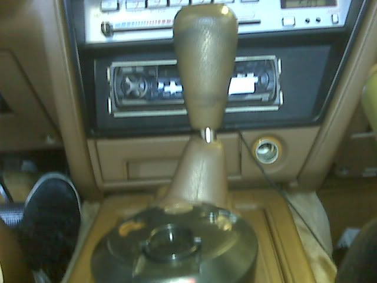
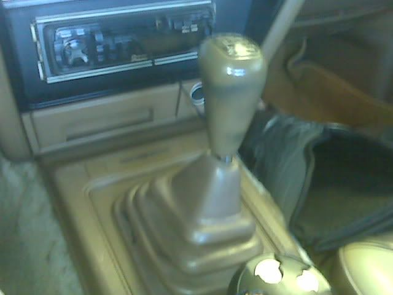

-
I couldn't find any guides on how to install a short shifter into a T-5 transmission. And when I installed one myself based on Mustang guides; it was a little bit different and tougher as I'll show later in this guide.
I bought the A.M. Mustang Short Throw Sport Shifter from this website for $70 with free shipping. I also used the gaskets provided by A.M. for $10 more.
*NOTE* I had to buy a new shift knob because the lever provided had a different thread size compared to the OEM T-5 lever, so you might need a new shift knob.
Other short shifters people could consider are:
-B&M Pro Ripper
-B&M Precision Sport Shifter
-Steeda Tri-Ax
-MGW >

5. Here's a pic with my fancy rubber gasket seal
Also bolt in the two Allen screws (provided with the A.M. shifter) in the green marked holes. Make sure they're on tight.
6. Unscrew these bolts using the Allen wrench to remove the shifter lever.
**Also, A.M. provided two stiffer springs. To use them, unscrew the two larger Allen bolts and replace the springs that are already installed. This is if you want a stiffer shift lever moving left and right.**
7. Place the shifter base lining up the holes with the two Allen screws placed in previously and make sure the gasket seal is sealing properly.
Use the nuts and washers to screw onto the Allen bolts to secure the base.
Screw in the two saved bolts with washers into the further holes. Unless you have really skinny fingers, you might have to use something else to place them in.
8. Now assemble the shift lever making sure the bottom ball joint goes into the bushing.
9. Assemble the rest of the pieces back together. Make sure you put in and adjust the two larger Allen bolts along with the nuts for the shift stops.
If you bought the gasket kit, A.M. provides the shift lever gasket as well to "minimize" noise lever. My gasket had the two holes gaped too far apart, but I used it anyway. Also I made a mistake marked in the green circle by installing the 2nd piece on the wrong side.
-=At this point, it is important to check if the shifter shifts into all of the gears correctly.
10. Reassemble the rest of the parts together. Installation complete!
Here's the OEM pics
Here's some pics with the queer 2nd piece position with the OEM shift knob that doesn't fit. Also the settings is at its lowest.

Conclusion
This job took me 3 hours to do because I'm usually not do-it-yourself savvy. There was a lot of trial and error of taking this piece off, putting this piece on, dropping bolts onto the floor because of the lacking of guides and instructions for the Z31 T-5 transmission. It was a freakin puzzle to me. I know the shift lever still looks tall (maybe taller than before), but this modification did shorten the shift throw by atleast %50. This was my first short throw shifter, so I can't compare this with the big named short throw shifter. I've read a lot of reviews on the website saying to use locktite on the handle bolts.
Thanks for reading my guide. I give credit to the tall.html">installation instruction page on the A.M. website to use roughly as a guide and my cousin for giving me some pointers. I hope this will help anyone who reads this.
Soon I'll be attaching pictures with my cheap looking shift knob.
---------------------------------------
If there's any errors, please PM me.'85 z31 stock -
Great write up i also bought that same gasket and shiter I am going to try this today!86 NA
87 Turbo
Member of the "zetto sun-ichi" group
Local MN car forum/club anyone welcome..... fivezeroseven.net join! -
Awesome walkthrough man, I'm gonna look one of those shifters up Kira-1988 N/A T-Top- Turbo soon
Kira-1988 N/A T-Top- Turbo soon
Naomi-1984 N/A Slicktop R.I.P.-stolen
1976 Chevy Camaro R.I.P.- Custom candycane rods -
I just did it....i think my vg33 and t5 must sit in a different spot....it was a bitch getting those front bolts you couldnt even see them. I ended up drilling holes and put them in from the top.86 NA
87 Turbo
Member of the "zetto sun-ichi" group
Local MN car forum/club anyone welcome..... fivezeroseven.net join! -
how do i know if my car has this transmission? i have a 88 n/a -
I noticed that to with my stock NA and my t5 transmission as well! I used a ratchet wrench. But honestly, I think ill make a hole next time.edicer2 wrote: I just did it....i think my vg33 and t5 must sit in a different spot....it was a bitch getting those front bolts you couldnt even see them. I ended up drilling holes and put them in from the top.My Build Thread -
T-5 came in 84-86 Turbo cars yours would have come with a 71C, so lookup a short throw for a 240SXshane4585 wrote: how do i know if my car has this transmission? i have a 88 n/a

Copyright © 2006–. All rights reserved. Privacy Policy